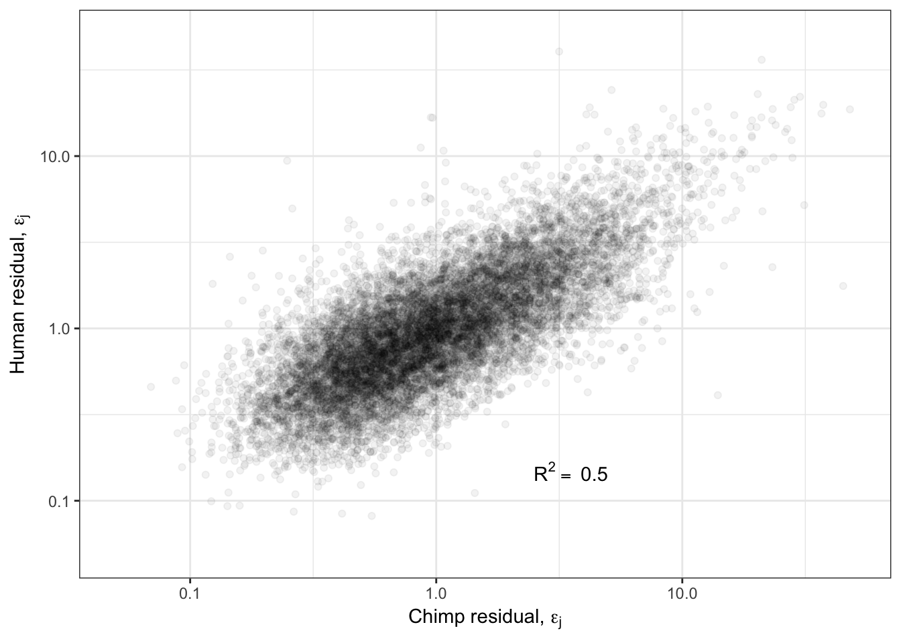
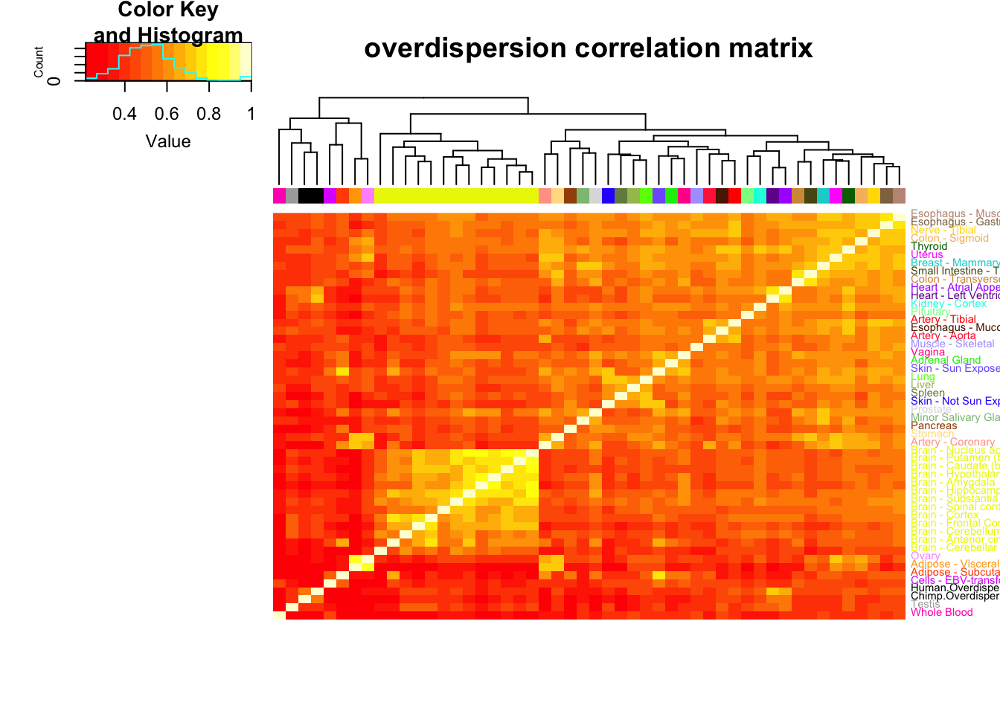

20190930_OverdispersionEstimatesBetweenSpecies
Ben Fair
9/30/2019
Last updated: 2019-10-04
Checks: 6 1
Knit directory: Comparative_eQTL/analysis/
This reproducible R Markdown analysis was created with workflowr (version 1.4.0). The Checks tab describes the reproducibility checks that were applied when the results were created. The Past versions tab lists the development history.
The R Markdown file has unstaged changes. To know which version of the R Markdown file created these results, you’ll want to first commit it to the Git repo. If you’re still working on the analysis, you can ignore this warning. When you’re finished, you can run wflow_publish to commit the R Markdown file and build the HTML.
Great job! The global environment was empty. Objects defined in the global environment can affect the analysis in your R Markdown file in unknown ways. For reproduciblity it’s best to always run the code in an empty environment.
The command set.seed(20190319) was run prior to running the code in the R Markdown file. Setting a seed ensures that any results that rely on randomness, e.g. subsampling or permutations, are reproducible.
Great job! Recording the operating system, R version, and package versions is critical for reproducibility.
Nice! There were no cached chunks for this analysis, so you can be confident that you successfully produced the results during this run.
Great job! Using relative paths to the files within your workflowr project makes it easier to run your code on other machines.
Great! You are using Git for version control. Tracking code development and connecting the code version to the results is critical for reproducibility. The version displayed above was the version of the Git repository at the time these results were generated.
Note that you need to be careful to ensure that all relevant files for the analysis have been committed to Git prior to generating the results (you can use wflow_publish or wflow_git_commit). workflowr only checks the R Markdown file, but you know if there are other scripts or data files that it depends on. Below is the status of the Git repository when the results were generated:
Ignored files:
Ignored: .DS_Store
Ignored: .Rhistory
Ignored: .Rproj.user/
Ignored: analysis/.DS_Store
Ignored: analysis/20190521_eQTL_CrossSpeciesEnrichment_cache/
Ignored: analysis_temp/.DS_Store
Ignored: code/.DS_Store
Ignored: code/snakemake_workflow/.DS_Store
Ignored: data/.DS_Store
Ignored: data/PastAnalysesDataToKeep/.DS_Store
Ignored: docs/.DS_Store
Ignored: docs/assets/.DS_Store
Unstaged changes:
Modified: analysis/20190930_OverdispersionEstimates.Rmd
Note that any generated files, e.g. HTML, png, CSS, etc., are not included in this status report because it is ok for generated content to have uncommitted changes.
These are the previous versions of the R Markdown and HTML files. If you’ve configured a remote Git repository (see ?wflow_git_remote), click on the hyperlinks in the table below to view them.
| File | Version | Author | Date | Message |
|---|---|---|---|---|
| Rmd | 71db33a | Benjmain Fair | 2019-10-03 | update site |
| html | 71db33a | Benjmain Fair | 2019-10-03 | update site |
| Rmd | 7810819 | Benjmain Fair | 2019-10-01 | added overdispersion analysis, gene lists |
From my dataset of gene expression measurements across 39 chimp individuals (RNA-seq from heart tissue) and ~39 human individuals (~10 RNA-seq samples from Bryan’s dataset which are experimentally batch-matched with ~10 of our chimp datasets, as well as ~30 datasets randomly chosen from GTEx heart left ventricle set) I am interested in quantifying gene expression dispersion within each population. I had previously made the observation that gene expression dispersion (summarized by statistics like standard deviation, or variance) is well correlated (\(R^2\approx0.6\)) between the two species, even after regressing out the fact that variance is correlated to expression (due to both biological and statstical reasons). Abhishek suggested I do this analysis a bit differently. Rather than simply plotting standard deviation for each gene after regressing out the relationship with absolute expression, I should model the raw count data with a negative binomial model and estimate an over dispersion parameter. Abhishek wrote more description here with some snippets of how I might accomplish this.
library(plyr)
library(tidyverse)
library(knitr)
library("edgeR")
library(stats)
library(corrplot)
library(gplots)
library("clusterProfiler")
library("org.Hs.eg.db")
library(enrichplot)
library(cowplot)
library('latex2exp')
library(gdata)
# custom functions to read count tables, estimate overdispersion based on Abhishek's code snippets
source("../code/CustomFunctions.R")First, I will pick samples and genes to run this analysis on… The choice of which human samples from GTEx to include are the same ones I used for differential expression analysis here. Basically, I just excluded outlier samples that didn’t cluster with the large majority of samples. The samples were re-mapped to their respective genomes and gene counts were determined using only reads over othologous exons. The genes I will include in this analysis will be all those that were tested for eGene in both species and in the ortho-exon count table.
HumanSamplesToDrop <- c(c("SRR1507229","SRR603918", "SRR1478149", "SRR598509", "SRR613186"), c("SRR1489693", "SRR598148", "59167", "SRR1478900", "SRR1474730", "61317"))
ChimpSamplesToDrop <- c("Little_R")
CountTableChimpFile <- '../output/PowerAnalysisFullCountTable.Chimp.subread.txt.gz'
CountTableHumanFile <- '../output/PowerAnalysisFullCountTable.Human.subread.txt.gz'
eQTLs <- read.table(gzfile("../data/PastAnalysesDataToKeep/20190521_eQTLs_250kB_10MAF.txt.gz"), header=T)
# List of chimp tested genes
ChimpTestedGenes <- rownames(read.table('../output/ExpressionMatrix.un-normalized.txt.gz', header=T, check.names=FALSE, row.names = 1))
ChimpToHumanGeneMap <- read.table("../data/Biomart_export.Hsap.Ptro.orthologs.txt.gz", header=T, sep='\t', stringsAsFactors = F)
# Of this ortholog list, how many genes are one2one
OneToOneMap <- ChimpToHumanGeneMap %>%
filter(Chimpanzee.homology.type=="ortholog_one2one")
# Read gtex heart egene list
# Only consider those that were tested in both species and are one2one orthologs
GtexHeartEgenes <- read.table("../data/Heart_Left_Ventricle.v7.egenes.txt.gz", header=T, sep='\t', stringsAsFactors = F) %>%
mutate(gene_id_stable = gsub(".\\d+$","",gene_id)) %>%
filter(gene_id_stable %in% OneToOneMap$Gene.stable.ID) %>%
mutate(chimp_id = plyr::mapvalues(gene_id_stable, OneToOneMap$Gene.stable.ID, OneToOneMap$Chimpanzee.gene.stable.ID, warn_missing = F)) %>%
filter(chimp_id %in% ChimpTestedGenes)
EgenesTested <- gsub("\\..+", "", GtexHeartEgenes$gene_id, perl=T)
length(EgenesTested)[1] 11586GenesInDESet <- read.table(gzfile(CountTableChimpFile), header=T, check.names=FALSE, skip=1)$Geneid
length(GenesInDESet)[1] 44125GeneList <- intersect(as.character(GenesInDESet),EgenesTested)Now, load count tables and calculate overdispersion
CountTables <- GetCountTables(CountTableChimpFile,
CountTableHumanFile,
0, GeneList, ChimpSampleDrop=ChimpSamplesToDrop, HumanSampleDrop = HumanSamplesToDrop)
Chimp.NB.fit.parameters<-GetParameterEstimatesOfUnderlyingGamma_lengthAdjusted_FromTable(CountTables$Chimp$Counts, CountTables$Chimp$GeneLengths)
Human.NB.fit.parameters<-GetParameterEstimatesOfUnderlyingGamma_lengthAdjusted_FromTable(CountTables$Human$Counts, CountTables$Human$GeneLengths)Just to as one simple confirmation that the code is working as expected, here is a plot of the population mean expression estimate \(\hat{\mu_j}\) for each gene \(j\) from the negative binomial fit, versus when I calculate the expression estimates by a simply averaging across samples (let’s call it \(\bar{x_j}\)) for all genes.
ToPlot <- cbind(Chimp.NB.fit.parameters,
apply(CountTables$Chimp$log2RPKM, 1, mean),
Human.NB.fit.parameters,
apply(CountTables$Human$log2RPKM, 1, mean))
colnames(ToPlot) <- c("Chimp.Mean.Expression", "Chimp.Overdispersion", "Chimp.Mean.Log2RPKM", "Human.Mean.Expression", "Human.Overdispersion", "Human.Mean.Log2RPKM")
#Plot mu parameter estimate (estimate of log(mean expression)) vs logRPKM
R<-cor(ToPlot$Chimp.Mean.Expression, ToPlot$Chimp.Mean.Log2RPKM, use="complete.obs")
lb1 <- paste("~R^2==~", round(R**2,2))
ggplot(ToPlot, aes(x=Chimp.Mean.Expression, y=Chimp.Mean.Log2RPKM)) +
geom_point(alpha=0.05) +
xlab(TeX('$\\hat{\\mu}$')) +
ylab(expression(bar("x"))) +
annotate("text",x=Inf,y=-Inf, label=lb1, hjust=1, vjust=-1, parse=TRUE) +
theme_bw()
| Version | Author | Date |
|---|---|---|
| 71db33a | Benjmain Fair | 2019-10-03 |
Ok now, let’s see how the estimated overdispersion estimates (\(1/\hat{\phi_j}\)) correlate between species:
R<-cor(log(ToPlot$Chimp.Overdispersion),log(ToPlot$Human.Overdispersion), use="complete.obs")
lb1 <- paste("~R^2==~", round(R**2,2))
Overdispersion.Species.Correlation <- ggplot(ToPlot, aes(x=Chimp.Overdispersion, y=Human.Overdispersion)) +
geom_point(alpha=0.05) +
scale_x_continuous(trans='log10', limits=c(1E-2,10), name=expression(paste("Chimp overdispersion, ", "1","/", hat(phi)))) +
scale_y_continuous(trans='log10', limits=c(1E-2,10), name=expression(paste("Human overdispersion, ", "1","/", hat(phi)))) +
annotate("text",x=5,y=0.1, label=lb1, hjust=1, vjust=-1, parse=TRUE) +
theme_bw()
Overdispersion.Species.Correlation
| Version | Author | Date |
|---|---|---|
| 71db33a | Benjmain Fair | 2019-10-03 |
Ok those correlate quite well. While this model fitting method for estimating overdispersion parameter should properly take into account the statistical counting variance (related to gene length, and expression level), given that gene expression between species correlate so well (\(R^2>0.9\)) it is natural to check if there there may be residual expression-related reasons that explain how dispersion is correlated between species. So let’s see if there is still a correlation between overdispersion \(1/\hat{\phi_j}\) and expression level \(\hat{\mu_j}\).
#Plot overdispersion vs mu
LoessPlot <- ggplot(ToPlot, aes(x=Chimp.Mean.Expression, y=Chimp.Overdispersion)) +
geom_point(alpha=0.2) +
scale_x_continuous(name=TeX('Chimp log(RPKM), $\\hat{\\mu}$')) +
scale_y_continuous(trans="log10", name=expression(paste("Chimp overdispersion, ", "log(1","/", hat(phi), ")")), limits=c(0.001,10)) +
geom_smooth(method=loess, show.legend = FALSE, se=T, method.args=list(degree=1)) +
theme_bw()
LoessPlot
| Version | Author | Date |
|---|---|---|
| 71db33a | Benjmain Fair | 2019-10-03 |
Ok, this is similar to what Abhishek has described as seeing, as well as Eling et al 2018. I think it is still reasonable to be skeptical that the correlation between species overdispersion is still due some technical aspect to expression levels. To rule that out that possibility, similar to what I have done before, (and similar to Eling et al) I will regress out the expression level and check that the residual overdispersion \(\epsilon_j\) is still well corellated between species.
ResidualDemoPlot <- LoessPlot +
geom_segment(aes(x=-21.125,xend=-21.125, y=0.35, yend=2.5),
lineend = "round", linejoin = "round", color="brown",
size = 0.7, arrow = arrow(length = unit(0.1, "inches"))
) +
annotate("text",x=-20,y=0.1, label=TeX("$\\epsilon_j$"), hjust=1, vjust=-1, color="brown", size=10)
ResidualDemoPlot
| Version | Author | Date |
|---|---|---|
| 71db33a | Benjmain Fair | 2019-10-03 |
GetLoessResidual <- function(x, y){
loess.fit <- loess(y ~ x, degree=1)
#for our purposes, the fit with the default degree=2 looks like unnatural fit, especially near the edges
loess.residual <- y - predict(loess.fit, x)
return(loess.residual)
}
# I got the residual of log transformed overdispersion estimate, then expontiate it and plot it on log-transformed axis. Just a personal preference for plotting, instead of just keeping data log-transformed.
ToPlot$Chimp.Residual <- exp(GetLoessResidual(ToPlot$Chimp.Mean.Expression, log(ToPlot$Chimp.Overdispersion)))
ToPlot$Human.Residual <- exp(GetLoessResidual(ToPlot$Human.Mean.Expression, log(ToPlot$Human.Overdispersion)))
R<-cor(log(ToPlot$Chimp.Residual),log(ToPlot$Human.Residual), use="complete.obs")
cor.test(log(ToPlot$Chimp.Residual),log(ToPlot$Human.Residual), use="complete.obs")
Pearson's product-moment correlation
data: log(ToPlot$Chimp.Residual) and log(ToPlot$Human.Residual)
t = 106.99, df = 11411, p-value < 2.2e-16
alternative hypothesis: true correlation is not equal to 0
95 percent confidence interval:
0.6983673 0.7166890
sample estimates:
cor
0.7076471 lb1 <- paste("~R^2==~", round(R**2,2))
Overdispersion.Species.Correlation.Corrected <- ggplot(ToPlot, aes(x=Chimp.Residual, y=Human.Residual)) +
geom_point(alpha=0.05) +
scale_x_continuous(limits=c(0.05,50), trans="log10", name=TeX("Chimp residual, $\\epsilon_j$")) +
scale_y_continuous(limits=c(0.05,50), trans="log10", name=TeX("Human residual, $\\epsilon_j$")) +
annotate("text",x=5,y=0.1, label=lb1, hjust=1, vjust=-1, parse=TRUE) +
theme_bw()
Overdispersion.Species.Correlation.Corrected
| Version | Author | Date |
|---|---|---|
| 71db33a | Benjmain Fair | 2019-10-03 |
Ok so even when I regress out the affect of the mean, I still get a strong correlation of overdispersion between species. What is the biological meaning of this? Are certain gene groups more or less overdispersed in one species or another? What is a reasonable way to go about hypothesis testing for differentially overdispersed genes between species? How does this level of correlation of overdispersion compare to between tissues within human GTEx samples?
First, to help with thinking about how to interpret overdispersed genes, let’s do GSEA to get a sense of what kinds of genes are highly overdispersed. My prediction is that overdispersed genes will have negative enrichment for essential and housekeeping genes.
gsea.full <- function(NamedGeneVector, ...){
SortedNamedGeneVector <- sort(NamedGeneVector, decreasing=T)
BP<-gseGO(gene=SortedNamedGeneVector,
ont = "BP",
OrgDb=org.Hs.eg.db,
keyType='ENSEMBL',
nPerm=100000)
BiologicalProcess<-as.data.frame(simplify(BP))
MF<-gseGO(gene=SortedNamedGeneVector,
ont = "MF",
OrgDb=org.Hs.eg.db,
keyType='ENSEMBL',
nPerm=100000)
MolecularFunction<-as.data.frame(simplify(MF))
CC<-gseGO(gene=SortedNamedGeneVector,
ont = "CC",
OrgDb=org.Hs.eg.db,
keyType='ENSEMBL',
nPerm=100000)
CellularComponent<-as.data.frame(simplify(CC))
Combined.simplified <- combine(BiologicalProcess,MolecularFunction,CellularComponent)
return(list(BP=BP, MF=MF, CC=CC, Simplified=Combined.simplified))
}
# MeanOverdispersion <- (log(ToPlot$Chimp.Overdispersion) + log(ToPlot$Human.Overdispersion))/2
MeanOverdispersion <- log(ToPlot$Human.Overdispersion)
names(MeanOverdispersion) <- rownames(ToPlot)
GSEA.mean <-gsea.full(MeanOverdispersion)
#Plot most enriched categories (absolute value of enrichment score, with p.adjust>0.05)
OverdispersionGSEAPlot <- GSEA.mean$Simplified %>%
filter(setSize>=10) %>%
filter(p.adjust<=0.003) %>%
group_by(source) %>%
top_n(n = 5, wt = abs(enrichmentScore)) %>%
ungroup() %>%
ggplot(aes(x=enrichmentScore, y=Description, color=p.adjust, size=setSize)) +
geom_point() +
xlim(c(-1,1)) +
facet_grid(source~., scales = "free") +
scale_colour_gradient(low="red", high="black") +
facet_grid(source~., scales = "free") +
xlab("Enrichment\nLowOverdispersion<-->HighOverdispersion") +
scale_y_discrete(labels = function(x) lapply(strwrap(x, width = 40, simplify = FALSE), paste, collapse="\n")) +
labs(color = "Adjusted P-value") +
theme_bw()+ theme(legend.position="top")
OverdispersionGSEAPlot
| Version | Author | Date |
|---|---|---|
| 71db33a | Benjmain Fair | 2019-10-03 |
#Plot most significant categories
GSEA.mean$Simplified %>%
group_by(source) %>%
top_n(n = -5, wt = p.adjust) %>%
ungroup() %>%
group_by(source) %>%
sample_n(8) %>%
ggplot(aes(x=enrichmentScore, y=Description, color=p.adjust, size=setSize)) +
geom_point() +
xlim(c(-1,1)) +
facet_grid(source~., scales = "free") +
scale_colour_gradient(low="red", high="black") +
facet_grid(source~., scales = "free") +
xlab("Enrichment\nLowOverdispersion<-->HighOverdispersion") +
scale_y_discrete(labels = function(x) lapply(strwrap(x, width = 60, simplify = FALSE), paste, collapse="\n")) +
labs(color = "Adjusted P-value") +
theme_bw()Consistent with that intuition, I would say the genes with low dispersion (negative enrichment) are words relating to essential processes, while MHC complex and other immune related words make sense in that they are associated with high overdispersion and these gene sets respond to random environmental insults that could contribute to population variation. Continuing with the idea that low overdispersion is related to important housekeeping genes, let’s check if lowly overdispersed genes are related to gene lists of essentiality (based on Hart et al, a cell culture CRISPR screen experiment).
EssentialGenes <- read.table("../data/lists/CEGv2_subset_universe.tsv", stringsAsFactors = F) %>% pull(V1) %>% mapIds(org.Hs.eg.db, keys=., keytype = "SYMBOL", column="ENSEMBL")
NonEssentialGenes <- read.table("../data/lists/NEGv1_subset_universe.tsv", stringsAsFactors = F) %>% pull(V1) %>% mapIds(org.Hs.eg.db, keys=., keytype = "SYMBOL", column="ENSEMBL")
Essentiality <- ToPlot %>%
rownames_to_column() %>%
mutate(CultureEssentiality=case_when(
rowname %in% EssentialGenes ~ "Essential",
rowname %in% NonEssentialGenes ~ "NonEssential")) %>%
filter(CultureEssentiality %in% c("Essential", "NonEssential"))
Essentiality$CultureEssentiality %>% table().
Essential NonEssential
555 6 ggplot(Essentiality, aes(color=CultureEssentiality,x=Human.Overdispersion)) +
stat_ecdf(geom = "step") +
scale_x_continuous(trans='log10') +
ylab("Cumulative frequency") +
annotate("text", x = 0.5, y = 0.2, label = paste("Mann-Whitney\none-sided P =", signif(wilcox.test(data=Essentiality, Human.Overdispersion ~ CultureEssentiality, alternative="less")$p.value, 2) )) +
theme_bw()
| Version | Author | Date |
|---|---|---|
| 71db33a | Benjmain Fair | 2019-10-03 |
Although it seems that the vast majority of genes for which I estimated overdispersion are essential, from the 6 non essential genes, they do seem to have a significantly higher distribution of overdispersion estimates.
Now let’s ask what types of genes are overdispersed in my chimp sample population relative to human sample population (and vice versa). Luckily for GSEA analysis I only need a ranked list, however, it might be useful in the future to figure how to formally test the hypothesis for each gene that \(\phi_{chimp}=\phi_{human}\).
OverdispersionSpeciesDifference <- (log(ToPlot$Chimp.Overdispersion) - log(ToPlot$Human.Overdispersion))
names(OverdispersionSpeciesDifference) <- rownames(ToPlot)
GSEA.Difference <-gsea.full(OverdispersionSpeciesDifference)
#Plot most enriched categories (absolute value of enrichment score, with p.adjust>0.05)
GSEA.Difference$Simplified %>%
group_by(source) %>%
top_n(n = 15, wt = abs(enrichmentScore)) %>%
ungroup() %>%
ggplot(aes(x=enrichmentScore, y=Description, color=p.adjust, size=setSize)) +
geom_point() +
xlim(c(-1,1)) +
facet_grid(source~., scales = "free") +
scale_colour_gradient(low="red", high="black") +
facet_grid(source~., scales = "free") +
xlab("Enrichment\nOverdispersedInHuman<-->OverdispersedInChimp") +
scale_y_discrete(labels = function(x) lapply(strwrap(x, width = 60, simplify = FALSE), paste, collapse="\n")) +
labs(color = "Adjusted P-value") +
theme_bw()
| Version | Author | Date |
|---|---|---|
| 71db33a | Benjmain Fair | 2019-10-03 |
#Plot most significant categories
GSEA.Difference$Simplified %>%
group_by(source) %>%
top_n(n = -15, wt = p.adjust) %>%
ungroup() %>%
group_by(source) %>%
sample_n(8) %>%
ggplot(aes(x=enrichmentScore, y=Description, color=p.adjust, size=setSize)) +
geom_point() +
xlim(c(-1,1)) +
facet_grid(source~., scales = "free") +
scale_colour_gradient(low="red", high="black") +
facet_grid(source~., scales = "free") +
xlab("Enrichment\nOverdispersedInHuman<-->OverdispersedInChimp") +
scale_y_discrete(labels = function(x) lapply(strwrap(x, width = 60, simplify = FALSE), paste, collapse="\n")) +
labs(color = "Adjusted P-value") +
theme_bw()
| Version | Author | Date |
|---|---|---|
| 71db33a | Benjmain Fair | 2019-10-03 |
Immune words seem to pop up as more overdispersed in chimp. Keep in mind that 7 of our chimps were HCV+ or HBV+. One day I will have to repeat this analysis after excluding those virus-challanged chimps.
Next I am interested in comparing the level of correlation of gene-wise overdispersion statistics across GTEx tissues. The fact that I saw a correlation of (\(R^2=0.6\)) across chimp and human seemed high to me, and I am interested in seeing how that compares across tissues within humans. Using a different Rscript, I have already generated a table of mu estimates and overdispersion estimates for each gene for each GTEx tissue using 40 samples per tissue. Here is more info on how I chose those samples (basically I excluded samples with different types of RNA-isolation methods for library prep and low mapping rates or RIN scores, then randomly selected 40 samples from the remaining set).
MuTable <- read.table("../output/GTEx.Tissues.Mu.Matrix.txt.gz", header=T, sep='\t', check.names = F, row.names = 1) %>%
rownames_to_column("X") %>%
mutate(gene = gsub("\\.\\d+", "", X, perl=T)) %>% dplyr::select(-X)
OverdispersionTable <- read.table("../output/GTEx.Tissues.Overdispersion.Matrix.txt.gz", header=T, sep='\t', check.names = F, row.names = 1) %>%
rownames_to_column("X") %>%
mutate(gene = gsub("\\.\\d+", "", X, perl=T)) %>% dplyr::select(-X)
OverdispersionCorrelationMatrix<-ToPlot %>% rownames_to_column() %>%
dplyr::select(rowname, Chimp.Overdispersion, Human.Overdispersion) %>%
left_join(OverdispersionTable, by=c("rowname"="gene")) %>%
column_to_rownames() %>%
as.matrix() %>% scale() %>% cor(use="na.or.complete")
GtexColors <- read.table("../data/GTEx_Analysis_TissueColorCodes.txt", sep='\t', header=T, stringsAsFactors = F) %>% mutate(HEX=paste0("#",Color.code))
GtexColors[nrow(GtexColors) + 1,] = c("Chimp.Mean.Expression","black", "#000000")
GtexColors[nrow(GtexColors) + 1,] = c("Human.Mean.Expression","black", "#000000")
GtexColors[nrow(GtexColors) + 1,] = c("Chimp.Overdispersion","black", "#000000")
GtexColors[nrow(GtexColors) + 1,] = c("Human.Overdispersion","black", "#000000")
GtexScheme <- plyr::mapvalues(row.names(OverdispersionCorrelationMatrix), from=GtexColors$Tissue, to=GtexColors$HEX)
OverdispersionCorrelationHeatmap <- heatmap.2(OverdispersionCorrelationMatrix, trace="none", dendrogram=c("col"), labCol=F, cexRow = 0.7, ColSideColors=GtexScheme, colRow = GtexScheme, adjRow=c(0,0), offsetRow=-0.6, main="overdispersion correlation matrix")
| Version | Author | Date |
|---|---|---|
| 71db33a | Benjmain Fair | 2019-10-03 |
MeanCorrelationMatrix<-ToPlot %>% rownames_to_column() %>%
dplyr::select(rowname, Chimp.Mean.Expression, Human.Mean.Expression) %>%
left_join(MuTable, by=c("rowname"="gene")) %>%
column_to_rownames() %>%
as.matrix() %>% scale() %>% cor(use="na.or.complete")
MeanCorrelationHeatmap <- heatmap.2(MeanCorrelationMatrix, trace="none", dendrogram=c("col"), labCol=F, cexRow = 0.7, ColSideColors=GtexScheme, colRow = GtexScheme, adjRow=c(0,0), offsetRow=-0.6, main="mean expression correlation matrix")
| Version | Author | Date |
|---|---|---|
| 71db33a | Benjmain Fair | 2019-10-03 |
Note that the clustering pattern for mean gene expression generally matches what GTEx had published in its pilot paper for clustering of tissues (heart ventricle, heart atrial appendage, skeletal muscle for a tight cluster, brain is a tight cluster, etc) and that my chimp heart dataset (which was processed a bit differently, with gene length and gene counts measurements coming only from orthologous exons) fall in that human heart cluster.
However, the clustering pattern for overdispersion shows less resemblance to the mean expression (though I hypothesize it would look more like the mean expression pattern if we had less noisy estimates with larger sample sizes). Furthermore, my chimp and human heart datasets cluster tightly together, though they do not cluster with any of the GTEx datasets. Worth noting that of the GTEx tissues, my human heart overdispersion estimates and my chimp overdispersion datasets are closest to the overdispersion estimates from GTEx heart.
Lastly, worth noting that the correlation coefficients of genewise dispersion between GTEx tissues is often in 0.4 to 0.6 range (Pearson \(R^2\)), which is about what I calculated between my chimp and human heart tissues.
# some plots mashed together into a single figure that could summarize this analysis
plot_grid(OverdispersionGSEAPlot,
Overdispersion.Species.Correlation,
ResidualDemoPlot,
Overdispersion.Species.Correlation.Corrected,
labels = c('A', 'B', 'C'), label_size = 12, scale=1, rel_heights = c(2,1))
| Version | Author | Date |
|---|---|---|
| 71db33a | Benjmain Fair | 2019-10-03 |
sessionInfo()R version 3.5.1 (2018-07-02)
Platform: x86_64-apple-darwin15.6.0 (64-bit)
Running under: macOS 10.14
Matrix products: default
BLAS: /Library/Frameworks/R.framework/Versions/3.5/Resources/lib/libRblas.0.dylib
LAPACK: /Library/Frameworks/R.framework/Versions/3.5/Resources/lib/libRlapack.dylib
locale:
[1] en_US.UTF-8/en_US.UTF-8/en_US.UTF-8/C/en_US.UTF-8/en_US.UTF-8
attached base packages:
[1] parallel stats4 stats graphics grDevices utils datasets
[8] methods base
other attached packages:
[1] MASS_7.3-51.4 gdata_2.18.0 latex2exp_0.4.0
[4] cowplot_0.9.4 enrichplot_1.2.0 org.Hs.eg.db_3.7.0
[7] AnnotationDbi_1.44.0 IRanges_2.16.0 S4Vectors_0.20.1
[10] Biobase_2.42.0 BiocGenerics_0.28.0 clusterProfiler_3.10.1
[13] gplots_3.0.1.1 corrplot_0.84 edgeR_3.24.3
[16] limma_3.38.3 knitr_1.23 forcats_0.4.0
[19] stringr_1.4.0 dplyr_0.8.1 purrr_0.3.2
[22] readr_1.3.1 tidyr_0.8.3 tibble_2.1.3
[25] ggplot2_3.1.1 tidyverse_1.2.1 plyr_1.8.4
loaded via a namespace (and not attached):
[1] fgsea_1.8.0 colorspace_1.4-1 ggridges_0.5.1
[4] rprojroot_1.3-2 qvalue_2.14.1 fs_1.3.1
[7] rstudioapi_0.10 farver_1.1.0 urltools_1.7.3
[10] ggrepel_0.8.1 bit64_0.9-7 lubridate_1.7.4
[13] xml2_1.2.0 splines_3.5.1 GOSemSim_2.8.0
[16] polyclip_1.10-0 jsonlite_1.6 workflowr_1.4.0
[19] broom_0.5.2 GO.db_3.7.0 ggforce_0.2.2
[22] compiler_3.5.1 httr_1.4.0 rvcheck_0.1.3
[25] backports_1.1.4 assertthat_0.2.1 Matrix_1.2-17
[28] lazyeval_0.2.2 cli_1.1.0 tweenr_1.0.1
[31] htmltools_0.3.6 prettyunits_1.0.2 tools_3.5.1
[34] igraph_1.2.4.1 gtable_0.3.0 glue_1.3.1
[37] reshape2_1.4.3 DO.db_2.9 fastmatch_1.1-0
[40] Rcpp_1.0.1 cellranger_1.1.0 nlme_3.1-140
[43] ggraph_1.0.2 xfun_0.7 rvest_0.3.4
[46] gtools_3.8.1 DOSE_3.8.2 europepmc_0.3
[49] scales_1.0.0 hms_0.4.2 RColorBrewer_1.1-2
[52] yaml_2.2.0 memoise_1.1.0 gridExtra_2.3
[55] UpSetR_1.4.0 triebeard_0.3.0 stringi_1.4.3
[58] RSQLite_2.1.1 caTools_1.17.1.2 BiocParallel_1.16.6
[61] rlang_0.3.4 pkgconfig_2.0.2 bitops_1.0-6
[64] evaluate_0.14 lattice_0.20-38 labeling_0.3
[67] bit_1.1-14 tidyselect_0.2.5 magrittr_1.5
[70] R6_2.4.0 generics_0.0.2 DBI_1.0.0
[73] pillar_1.4.1 haven_2.1.0 whisker_0.3-2
[76] withr_2.1.2 modelr_0.1.4 crayon_1.3.4
[79] KernSmooth_2.23-15 rmarkdown_1.13 viridis_0.5.1
[82] progress_1.2.2 locfit_1.5-9.1 grid_3.5.1
[85] readxl_1.3.1 data.table_1.12.2 blob_1.1.1
[88] git2r_0.25.2 digest_0.6.19 gridGraphics_0.4-1
[91] munsell_0.5.0 viridisLite_0.3.0 ggplotify_0.0.3